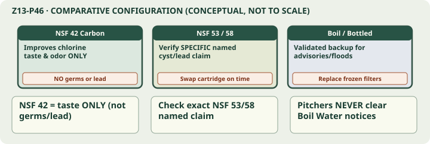

Z13-P46 · Home survival and utilities · New manuscript
Match household water filters to certified NSF claims and maintenance schedules
Prevent false reliance on basic taste-and-odor pitchers during biological or chemical emergencies by matching certified filter classes to exact contaminants.
When it applies · Homes using pitcher filters, faucet mounts, under-sink carbon/RO units, or gravity countertop filters.
Equipment · Manufacturer certification sheet (NSF/ANSI 42, 53, 55, 58, or P231), cartridge replacement calendar, and boiling/bottled backup.

Actions
- Check the individual model’s listed reduction claim. NSF/ANSI 42 concerns aesthetic effects. NSF/ANSI 53 and 58 cover different systems and claims, and a standard number alone does not establish lead or cyst reduction.[W19, W20, W21]
- Remember that standard home carbon pitchers and refrigerator filters do NOT make Boil Water advisory tap water, floodwater, or bacteria-contaminated private well water safe to drink.[W20, W21, W07]
- Follow the product manual and utility instructions for replacement, flushing or reinstatement after contamination or freeze exposure. Sawyer’s wet hollow-fiber advice applies to its specified products.[W21, W28, D12]
Failure recognition · Filtering Boil Water advisory tap water through a basic taste-only charcoal pitcher and assuming all bacteria and viruses are removed.[W20, W21]
Verify · Confirm exact NSF/ANSI certification and specific listed contaminants match household risks, with scheduled cartridge swap dates logged.[W20, W21]
Stop or change course · For chemical or Do Not Use advisories, use an approved alternate supply. Boiling is an option only for a microbial advisory and only as the utility directs.[W01, W07, D12]
Evidence and editorial notes
- D12 · CDC · Drinking Water Advisories: An Overview (current web edition)
- Section: Water-System Interruptions and Advisory Compliance · Conditions: Municipal main breaks, depressurization, chemical spills, or treatment-plant outages
Support: Follow the exact active utility advisory tier (Boil Water, Do Not Drink, or Do Not Use), shut off automatic icemakers/appliances during advisories, flush household pipes strictly per utility clearance instructions after restoration, and rely on stored or agency-distributed potable water during outages.
Limitations: Boiling water during a chemical-spill Do Not Drink/Do Not Use notice can volatilize or concentrate contaminants. · Conflicting evidence: None; integrates W07 into Z15 infrastructure-disruption scenarios.
Editorial note: Anchors municipal water-outage compliance and safe flushing. · Specialist reviewer: Drinking-water utility and public health
Primary source · checked 2026-11-24 - W01 · CDC · How to Make Water Safe in an Emergency (2024-09-19)
- Section: Water with fuel or toxic chemicals in it · Conditions: Suspected fuel, toxic chemicals or radioactive contamination
Support: Use a different safe supply. Standard boiling and microbial disinfection do not make this water safe.
Limitations: Does not list contaminant-specific lab remediation; applies to emergency consumer decisions only. · Conflicting evidence: None across CDC/EPA emergency guidance.
Editorial note: Used as upstream hard-stop gate prior to any field treatment card. · Specialist reviewer: Drinking-water safety and public health
Primary source · checked 2026-11-24 - W07 · CDC · Drinking Water Advisories: An Overview (current web edition)
- Section: Boil water; Do not drink; Do not use · Conditions: Public-water system advisories
Support: The notice determines safe activities. Use another source for do-not-drink notices. Do not use tap water for any purpose under a do-not-use notice unless authorities direct otherwise.
Limitations: Local utility directives supersede general field summaries. · Conflicting evidence: None; exact advisory category is authoritative.
Editorial note: Distinguishes boil-water, do-not-drink, and do-not-use actions explicitly. · Specialist reviewer: Drinking-water utility and public health
Primary source · checked 2026-11-24 - W19 · CDC · Preventing Giardia Infection (current web edition)
- Section: Drinking water and preventing infection while hiking or camping · Conditions: Untreated surface water in wilderness and rural watersheds
Support: Use boiling or a parasite-rated filter. Chemical treatment effectiveness depends on product, target organism, temperature and contact time.
Limitations: Pore size alone does not protect if cartridge seals leak or freeze-crack. · Conflicting evidence: None; underscores why chemical-only treatment has parasite limits.
Editorial note: Clarifies why filter micron/NSF ratings matter for protozoa. · Specialist reviewer: Drinking-water microbiology and public health
Primary source · checked 2026-11-24 - W20 · CDC · Choosing Home Water Filters and Other Water Treatment Systems (current web edition)
- Section: Removing parasites; Check the filter label · Conditions: Surface water impacted by wildlife, livestock, or runoff
Support: For parasite removal look for absolute pore size one micron or smaller or a specific certified cyst reduction/removal claim. NSF/ANSI 53 or 58 without the cyst claim does not establish that capability.
Limitations: Does not establish removal of viruses, dissolved chemicals or all other hazards. · Conflicting evidence: Clarifies gap left by single-barrier chlorine disinfection.
Editorial note: Core evidence for filter-plus-disinfect multi-barrier design in Z04. · Specialist reviewer: Drinking-water microbiology and public health
Primary source · checked 2026-11-24 - W21 · CDC · Choosing Home Water Filters and Other Water Treatment Systems (current web edition)
- Section: Check filter label for which germs and chemicals it removes; filter types · Conditions: Exact point-of-use model and a known target
Support: Verify the named independently tested reduction claim for the model. A treatment type or general standard number does not establish reduction for a different contaminant.
Limitations: Compare the product label and actual conditions; follow the active water advisory. · Conflicting evidence: See A02 claim audit for boundaries.
Editorial note: Frames equipment selection around verified contaminant classes and certifications. · Specialist reviewer: Drinking-water treatment specialist
Primary source · checked 2026-11-24 - W28 · Sawyer · Water Filtration FAQs (Current manufacturer FAQ)
- Section: Water filtration FAQ > filter freezing · Conditions: Sawyer wet hollow-fiber filters; other models follow their exact manufacturer instructions
Support: Freezing can damage a wetted filter. Sawyer advises replacing a filter suspected of freezing; visual inspection cannot establish its integrity.
Limitations: Do not extrapolate replacement or integrity-testing instructions to other products without their manuals. · Conflicting evidence: None; critical cold-weather filter failure mechanism.
Editorial note: Drives cold-weather filter protection and failure-recognition cards. · Specialist reviewer: Drinking-water treatment and cold-weather operations
Primary source · checked 2026-11-24
Source lineage · CDC Choosing Home Water Filters; new manuscript · Classification · New manuscript.